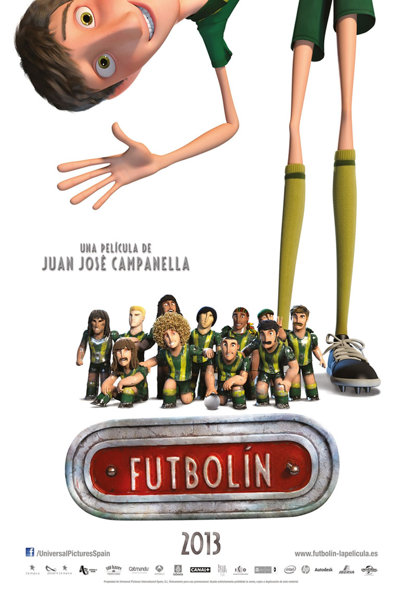
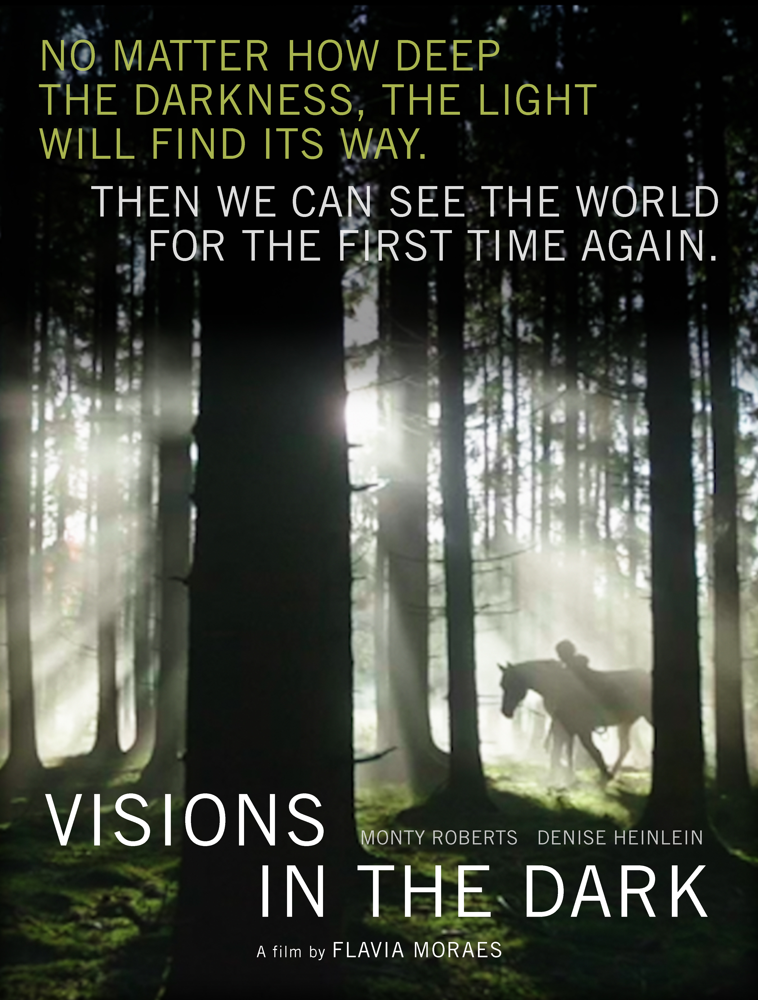

Cinemateca Capitólio visitar
- 
Sessão Vagalume: Um Time Show de Bola
Argentina/Espanha/Reino Unido/França, 2013, 106 min
Horários: 15:00h Sala de Cinema
Desde menino Amadeo é aficionado por futebol de mesa, tendo construído seus próprios jogadores. Ao ser desafiado por um arrogante garoto, algo mágico acontece e os bonecos da mesa de jogo ganham vida para ajudar o seu companheiro de grandes jogadas.
Mais informações 
Mirante
Brasil, 2019, 80 minutos, DCP Na sessão do dia 29/08, será realizada uma intervenção musical de Vagner Cunha.
Horários: 17:00h Sala de Cinema
Um jovem desenvolve o costume de admirar as pessoas que passam pelas ruas do centro de Porto Alegre através da janela de sua casa. No entanto, transformações na política brasileira fazem com que antigas feridas sejam reabertas. De repente, ele encontra dificuldades em separar a vida no apartamento e os acontecimentos externos.
Mais informações- 
Visions in the Dark
Brasil, 2023, 85 minutos, DCP Escrito por: Lins Ricon
Horários: 19:00h Sala de Cinema
DISTRIBUIÇÃO DE SENHAS MEIA-HORA ANTES DA SESSÃO. Após a sessão, debate com a diretora Flávia Moraes e equipe. Um treinador de cavalos e sua principal instrutora mostram ao mundo como um método intuitivo e não violento pode mudar a maneira que enxergamos a natureza e a nós mesmos, iluminando a cegueira contemporânea.
Mais informações